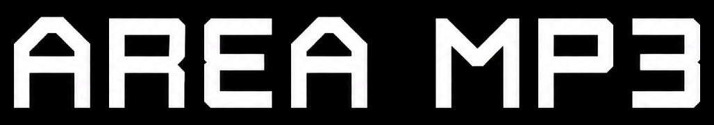

New drops / latest experiences
See all →Loading
How it works
Bring your art to life.
Upload your artwork and add animation, video, 3D models and music that will appear on your phone's camera.
Turn locations into discoveries.
Place your art in the real world. Pin the location, drop a clue, and lock your track.
Find it. See it. Play it.
Follow the location, chase the clues, and point your phone at hidden art to unlock music. Listen, download, or purchase.
3 easy steps / to upload
For artists
- Turn any image into a music AR experience
- Bring it to life with a photo, GIF, video or 3D model
- Hide songs in secret locations for your listeners to find
- Give them away when found, or sell them and keep 93% (100% with Pro)
- Go Pro to post full albums: one cover, up to 20 songs
- See who found them, plus followers, likes and comments
For listeners
- Hunt for secret songs around the world
- Point your camera to the real image to unlock the song
- Point your camera to the art to hear the music, keep what you find
- Follow, like, comment and message artists
Questions
How do secret songs work?
The artist puts the real image somewhere in the world and pins it. You see a map area and a hint. Go there, open the AR camera, and point it at the image. If you're really at the spot, the song unlocks for you and stays in your account.
What do I unlock?
The artist decides: a free download of the full song, the full song to play in the AR camera any time, or the right to buy it. It says which on the song's page.
Do I need an app?
No. It all works in your phone's browser. Open the link or scan the QR code, tap Start camera, and point it at the image. Allow your camera, and your location when you're unlocking a secret song.
How do I get paid?
PayPal's fee comes off each sale first. Then you keep 93% of the rest and Area MP3 keeps 7%. With Pro ($29.99 a year) you keep 100%: Area MP3 takes nothing from your sales. Pro also lets you post albums, up to 20 songs under one cover. Your share builds up on My page › Selling and is paid out to the PayPal email on your seller form.
Where does the song go on my phone?
It downloads as the file the artist uploaded: an MP3 or a WAV. On iPhone it lands in the Files app under Downloads; on Android it's in your Downloads folder. You can download it again any time from My page › Purchases.
Where do I hear the music?
Only in the AR camera. Songs don't play on the website: you scan the art to hear them. Once you've heard a song there, you can download it or buy it on its page. Blurred songs only play when you scan the real art at its spot. The file itself is stored privately: download links are made one at a time, after payment or unlocking, and expire in 10 minutes.
What can I put on my art?
A photo, GIF, video (up to 4 minutes) or 3D model, plus your song. 3D models go in as a .GLB file up to 25 MB (under 10 MB loads fastest). It stands up on your art in the AR camera and plays its own animation, or slowly turns if it doesn't have one. Using Blender? File › Export › glTF Binary (.glb).
Is my exact spot public?
Only if you want it to be. Turn on "Show approximate area only" and listeners just see a circle on the map. The exact spot is never sent to their phone; the site checks it privately when they scan.